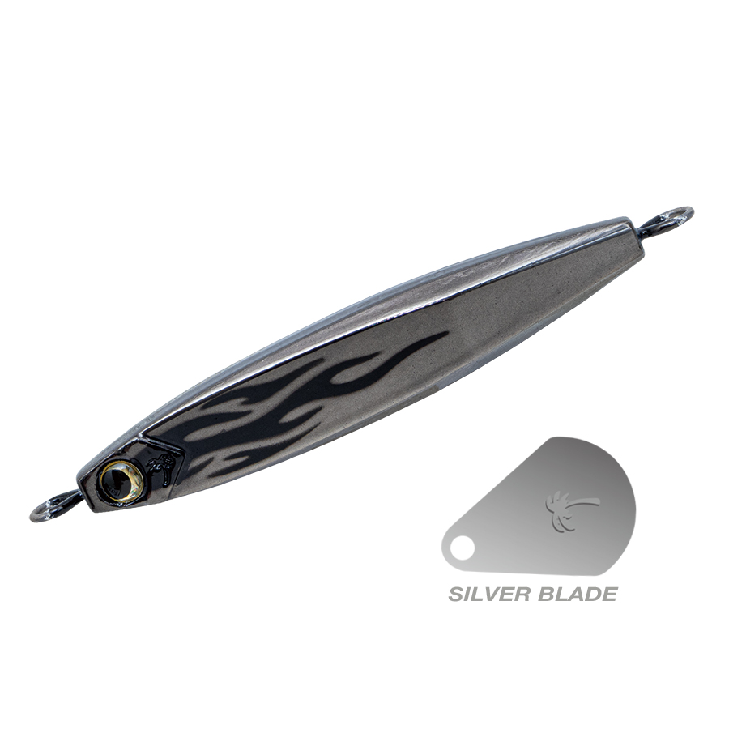
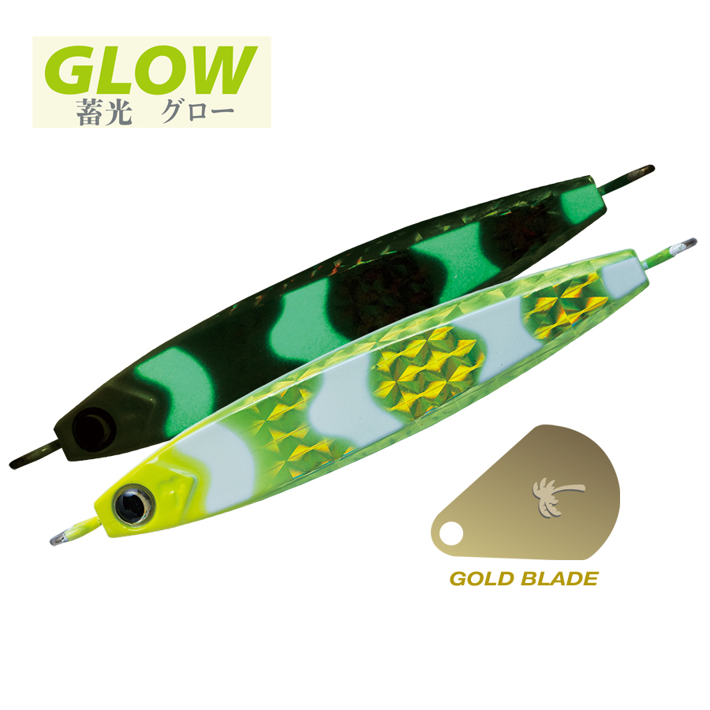
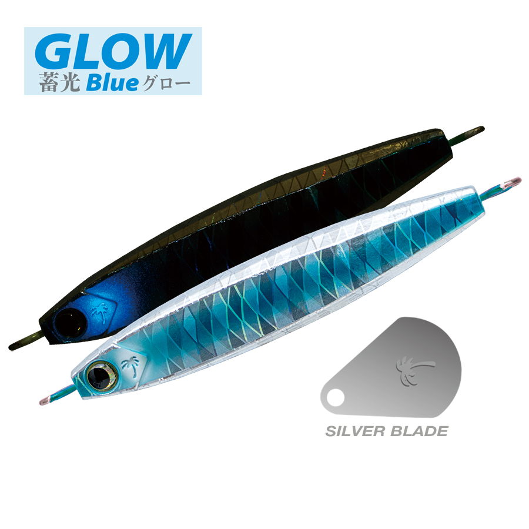
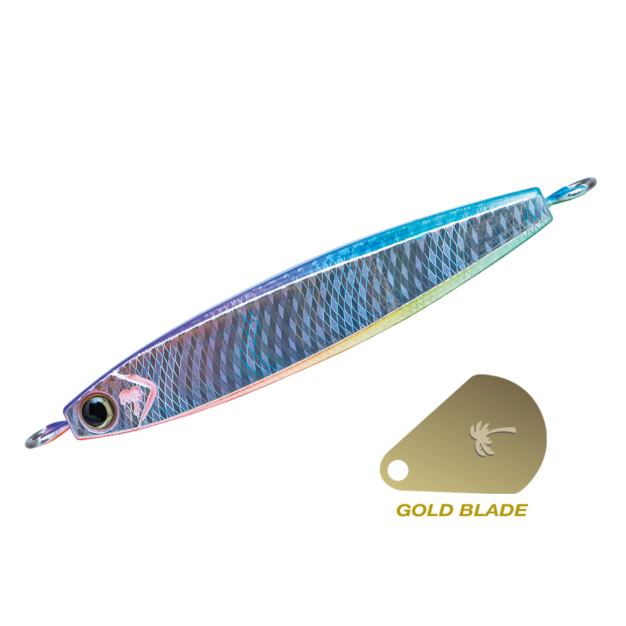

レイザー
（RAYZAA）
レイザーはPALMS（パームス）のブレードジグです。
ブレードジギングのメインターゲットであるサワラに向けて、ベイトフィッシュの鱗が放つような瞬間的な輝きを、より強く、より変化に富んだかたちで届けることを目指したモデル。ボディの鋭い反射とブレードの連続した輝き、2つのフラッシングでサワラに気づかせ、追わせ、食わせます。

画像出典:PALMS公式HP
スペック
- メーカー
- PALMS（パームス）
- タイプ
- ブレードジグ
- モデル
- RZ-80／RZ-100
- 全長
- 80mm（RZ-80）／85mm（RZ-100）
- 重さ
- 80g／100g
- リング・フック
- デコイ製（ループリング＋ジギングシングルカトラス）
- カラー
- 各12色
- ターゲット
- サワラ・サゴシ
- 価格
- 1,500円（RZ-80）／1,600円（RZ-100）※本体価格
▼今すぐチェック


レイザーの特徴
ボディとブレード、2つのフラッシングの“変化”で食わせる
-
大きく4面・最大10面の多面体ブロック形状
対称的なブロック形状のボディは、側面・背面・腹面の全周に広い平面を持ちます。フォールや巻き上げ中の軌道の変化、潮目を通過するときの揺らぎなど、ジグがわずかに姿勢を変えるたびに広い「面」が強く光を反射し、離れた魚にも存在を示します。
-
巻き速度で表情が変わる専用ブレード
先端を絞り、後方に最大幅を持つ独自形状のブレード。低速では軽やかにヒラヒラと回り、巻きスピードを上げるほど水を強くつかんで回転とフラッシングが大幅に増します。巻き速度による変化が手元にもはっきり伝わります。
-
デコイ製のリングとフック
支点が安定して強度に優れるループリングと、貫通力・ホールド力に優れたジギングシングルカトラスを採用。サワラの鋭い歯と強い引きにも安心して使えます。
レイザーの使い方
基本はボトムまで落としてからの高速巻き上げ。巻くことを基本とするブレードジギングでは、手元に伝わる引き抵抗の変化が水中の状況を知る手がかりになります。
反応がないときは、巻き速度を変えてブレードの回転とボディの動きに変化をつけるのがコツ。速く巻くとフラッシングが強くなり、ゆっくり巻くとヒラヒラとした軽い動きになります。
レイザーの得意な状況
船からのサワラ・サゴシのブレードジギング。80gと100gの重さがあるので、水深のある場所や潮が速い日でも、しっかりボトムを取って巻き上げられます。
ワンポイント
ボディ全周の平面にホログラムを貼ると、反射をさらに生かすこともできます。同じ巻き方を続けて反応がないときほど、巻き速度の変化で「表情を変える」意識を持つと、単調になりがちなブレードジギングに集中力が続きます。
レイザーのサイズの使い分け
| モデル | 全長／重さ | 使いどころ |
|---|---|---|
| RZ-80 | 80mm／80g | 基準のモデル。水深が浅め〜中くらいの場所や、潮が緩いときに |
| RZ-100 | 85mm／100g | 水深のある場所や、潮が速くボトムを取りにくいときに |
どちらも12色展開。まずはRZ-80を基準に、ボトムが取りにくいと感じたらRZ-100に替えるのがおすすめです。
人気カラー
各12色のラインナップから4色を紹介します（カラー名は公式の表記のまま）。

銀炎シルバー系のカラー。晴れた日の澄み潮で、多面体ボディの反射を最大限に生かしたいときに。

カクレゼブラチャートチャートにゼブラ模様の入ったカラー。濁り潮や曇りの日のアピールに。

サイドマリンクリアシルバーにブルーの鱗模様、蓄光ブルーグロー仕様でシルバーブレード付き。朝夕のマヅメや深場で光らせたいときに。

オーブブルーからピンクへ移り変わるオーロラ系のホロカラーで、ゴールドブレード付き。定番色でスレてきたときのローテーションに。
画像出典:PALMS公式HP
レイザーに似ているルアー
-
 ピーボーイブレード
タックルハウス
詳細はこちら＞
ピーボーイブレード
タックルハウス
詳細はこちら＞
ボディごと回転する115mm・50gのブレードジグ。細長いシルエットで違う見せ方をしたいときに。
-
 TGストライク
ブルーブルー
詳細はこちら＞
TGストライク
ブルーブルー
詳細はこちら＞
タングステンのブレードジグ。小さいベイトに合わせてシルエットを小さくしたいときに。
-
 ビッグバッカー Eブレード
ジャッカル
詳細はこちら＞
ビッグバッカー Eブレード
ジャッカル
詳細はこちら＞
7〜60gまでそろうブレードジグ。軽めのウエイトでショアからも狙いたいときに。